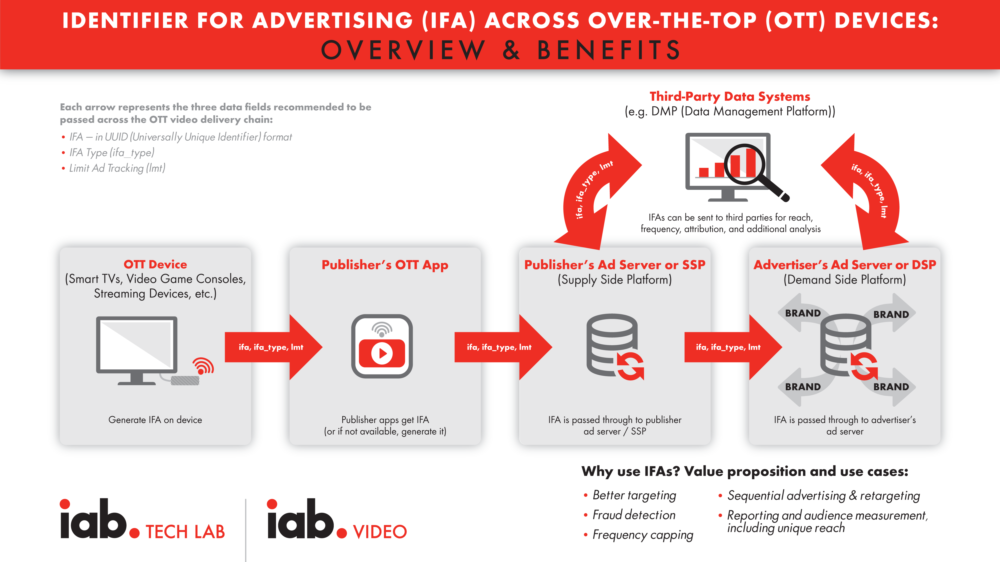
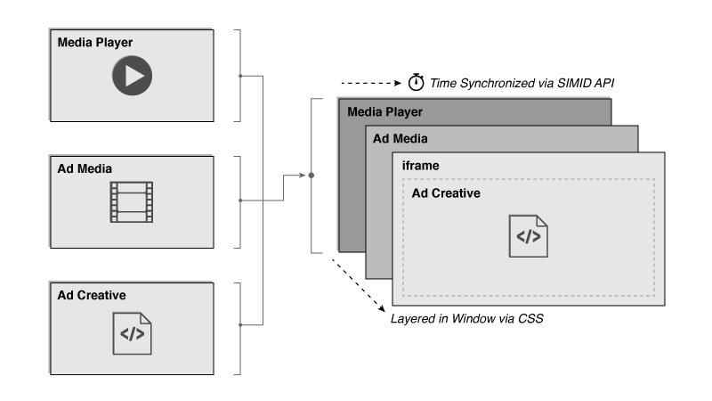
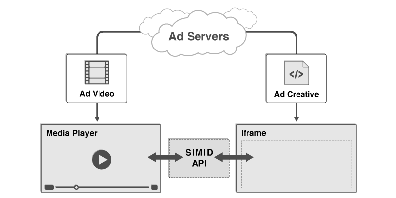

SSAI Highlights
Look for the blue callouts that highlight special considerations when working with SSAI.

This guide is part of a series of Programmatic Guides that IAB Tech Lab is providing to address the many technical components involved in executing programmatic ad campaigns. This guide focuses on the use cases involved in a programmatic campaign for connected TV (CTV). And since CTV often works with partners in server-side ad insertion (SSAI), special callouts highlight additional information where working with SSAI is concerned.
This guide is not all-inclusive; rather, it outlines a set of use cases and provides details that are relevant to each use case. Each use case is summarized in a Quick Start Overview and then later in the guide, covered in more detail. Links to additional resources and relevant Tech Lab standards for more details are included for each use case.
The goal of this document is to provide guidance for optimizing programmatic effectiveness in the supply chain for CTV campaigns using available resources developed by IAB Tech Lab and beyond. The guidance in this document addresses challenges faced in CTV with the following parties:
Digital video continues to mature as a medium for advertising, while the connected television (CTV) market has only begun to leverage the programmatic ad technology initially developed for digital video. Programmatic CTV opens new opportunities for expanding reach into homes across screens and devices. Traditional television has lacked the level of functionality and insight that became the norm across web browsers and mobile apps. Now, with CTV and advances in technology and improvements to standards, the industry has seen increasing parity in capabilities between CTV and digital video. Some of the challenges in CTV, however, lie in delivery, addressability, measurement, and fraud.
This guide summarizes the best practices for using the most recent ad technologies for achieving the best results in CTV advertising. As a guide, it highlights key considerations and directs you to more in-depth information where needed. We’ve broken down the technical components of a CTV campaign into the following use cases:
These use cases are summarized at a high level in the following section, and then each use case is broken down into more details.
This guide is intended for individuals that work in the buying, selling, and development of video advertising in CTV. Ad tech professionals who work with publisher players, ad servers, ad creative developers, measurement & verification providers, as well as demand side platforms & exchanges, media buyers, ad trafficking and operations, partner integration/onboarding engineers and Product Development can all benefit from the guidance offered in this documentation. The content is somewhat technical as it references different specifications and guidance documentation, but anyone who works with systems that handle video ad transactions should find the details useful.
The first television was introduced in 1928. It took until the 1980s for cable set top boxes to become mainstream. And it wasn’t until recent years that smart TVs (connected TVs) became mainstream. However, before CTV, we had the Internet, and shortly thereafter, digital video.
With programmatic ad-serving technology, digital video saw exponential growth. Since the initial launch of IAB Tech Lab’s Video Ad Serving Template (VAST) in 2008, digital video could begin to scale ad sales in the same way website publishers could with their display ads. With improvements to VAST and the addition of other technologies, ad tech for digital video became more sophisticated, and digital video quality improved.
With the explosion of devices that enabled consumers to watch their favorite videos anywhere, connected TVs became the next step in bringing that sophisticated ad tech to prime-time screens in people’s living rooms. But ad tech for CTV is still catching up. The good news is that much of the ad tech developed for digital video can also work in CTV.
As existing standards are updated to support CTV, and new standards are considered, this guide offers the best way to address the same challenges in CTV programmatic campaigns that first emerged as digital video matured. From the functional challenges of delivering assets to targeting and measurement to concerns over brand safety and ad fraud, the technical standards that have fueled the growth of digital video can also help CTV to scale and grow.
With SSAI, a client media player on the user device (client) no longer has to make ad server calls to deliver an ad. This is ideal for midroll, live streaming, and broadcast scenarios such as a news or sporting event where the latency of loading and unloading a player/ad on the client can cause errors and result in a poor user experience. Instead, an SSAI provider makes the ad requests on the client’s behalf, which has passed along details about the viewing session such as location, device type, and other data that can be useful in selecting the most relevant ads. After an ad has been selected, the SSAI provider matches the ad quality to that of the content and stitches the ad into the content stream, which is seamlessly delivered to the client player in a single stream. VAST 4 supports the increasingly common “ad-stitching” method for stitching linear ads into a video or audio content stream and sending it to players on client devices. While VAST 4 has specific items for SSAI, some developers still use VAST 3 to execute. For version-specific ads from advertisers, VAST 2, 3 or 4 all work today.

Look for the blue callouts that highlight special considerations when working with SSAI.
The following section outlines typical use cases broken down into functional areas such as Delivery, Targeting, Measurement, Interactivity, Brand Safety, and Ad Fraud. For simplification, we’ve highlighted commonly encountered challenges for each functional topic, as well as which specific Tech Lab standards should be implemented to address these issues. This section of the guidebook can be thought of somewhat as an executive summary, where a deep technical understanding isn’t necessarily required to grasp the concepts described in each use case.
Those interested in the critical details of applying the technical standards cited within this section should refer to the relevant portions within the Implementation section of this guidebook.Quality: As advertisers look to extend their digital video campaigns to include CTV, one of the primary considerations is the screen size on which ads are viewed. Larger screens mean that higher asset quality and overall consumer experience are even more important. In addition, CTV ad delivery and the need to support various devices have led to a deeper focus on Server-Side Ad Insertion (SSAI). For asset submission in CTV, and especially when working with SSAI, a mezzanine file is required. A mezzanine file is encoded at the highest possible quality and used to encode ready-to-serve ads at lower resolutions and smaller file size. Guidelines for creative file submission are outlined the Digital Video Ad Formats Guidelines.
Ad Request: VAST has historically been an ad response format, with the ad request left as an integration exercise. With VAST 4.1, a standard set of macros can be used to communicate information about the impression and player environment in the ad request. This enables ad servers to generate the best possible VAST response for any impression and reduce delivery errors. We recommend the use of [Macros and CATS]
Campaign Tracking: Another challenge in video ad delivery has been the lack of the ability to uniquely identify a creative asset across different media or screens. This is useful for reporting, caching creative assets, and frequency capping. We recommend advertisers provide [Universal AdID]
Separation of Media from Executable Code: The complexity of digital video has given rise to the need to separate the linear video file from any executable code like creative interactive API files or measurement scripts. While the VAST media file nodes has accepted various media files in the past, interactive APIs may not always be executed. In VPAID, the code and the media file are bundled together, resulting in latency and making it impossible to serve an ad through SSAI. Hence, with VAST 4.x, the deprecation of VPAID was announced in favor of providing separate locations for interactive and measurement scripts that ensure the media file is always easily accessible from the VAST tag. We recommend advertisers and their partners provide media files and executable codes separately to be included in VAST verification and creative nodes [VPAID deprecation]
Server-side Ad Insertion implementations present a number of unique complexities that could result in a multitude of errors if executed improperly. For example, custom work may be required between a client player and an SSAI provider to negotiate the logic of allowing a skip button for ads. Premium long-form content viewed on high resolution screens sets the expectation of an equally high-quality ad experience that can be delivered across various connections and device types. Ad servers and other entities need access to additional data from publishers for a clearer view of the details of how and where their media is being shown.
To enable error free execution of SSAI delivery, we recommend the following resources:Serving the right ad to the right audience at the right time and place has become ad tech’s favorite mantra. As the industry grapples with the loss of traditional identifiers, the CTV space has often had to forgo the luxuries of persistent user IDs, given the limitations of some environments. Some of the existing addressability solutions for CTV do rely to a degree on identifying audiences through attributes collected from devices such as User Agent (UA), IP Address, and app store IDs. And while these methods may not be immediately at risk of disappearing, with privacy in mind, the direction of the industry at large may be viewed as an indicator of what’s to come for video. We recommend Advertisers review our guidance on:
You may also want to follow IAB Tech Lab's Project Rearc for guidance on addressability, privacy, and accountability.
Beyond identity-based targeting, tools such as content and audience taxonomies exist as methods for enhancing the ability to provide relevant ads. We recommend the use of[Content/Audience Taxonomy, content Macros, and CATS ] by sellers to inform the advertisers about the content that aids targeting.In SSAI enabled environments, there is a general lack of standard identifiers, but even in cases where they do exist, stitching services may not have access to a client player’s identifier, which can complicate personalization and ad tracking. As a result, the ad-stitching service must identify devices where ads play by using a combination of other methods like IFA, User Agent, and App ID.
Measurement and verification are key requirements in digital advertising and can be key differentiators between Connected TV (CTV) advertising and traditional broadcast TV. There are three critical scenarios for measurement and verification of video advertising on CTV and other consumer devices:
Measurement events are usually communicated by the stitching service on the client player’s behalf, making it challenging to verify these events actually occurred on the client device. SSAI environments typically do not support the execution of 3rd party scripts. VPAID does not work in the SSAI environment. Where a client can execute measurement scripts and OM SDK is available, it should be used. For example, when SSAI delivery is on an iOS device or web browser, OM SDK can provide measurement.
Until recently, VPAID historically had been the preferred mechanism for providing a means to deliver interactive video ads. But due to issues surrounding security, latency, and a lack of support in certain environments, VPAID is rapidly becoming outdated and is in the process of being deprecated in favor of the newer Secure Interactive Media Interface Definition (SIMID) standard.
Often an ad developer or publisher might not have the resources to enable complex and custom interactive components for a campaign. In these scenarios where resources and capabilities may be limited, VAST 4.x has introduced interactive templates to simplify the execution of common interactive use cases, such as end cards, which require only some minimal visual assets (images, CSS, etc.) and some instructions/metadata in the VAST tag.Overall interactive ads are still not commonly seen in many SSAI use cases yet today, though the application is not impossible. Again, due to a lack of support for 3rd party scripts and deprecation of the technology, VPAID is not an option for delivering interactive ads in most SSAI environments. Yet with SIMID interactive creatives can be rendered in the SSAI context.
Generally speaking, there are three main areas where brand safety standards can be applied; categorization, communication, and post-bid action.
Delivering an ad in the wrong context can not only negatively impact the performance of a campaign but can have lasting effects on a brand’s image and favorability. Providing accurate categorization through the consistent application of a standardized set of taxonomies is key in achieving enough insight for marketers to make decisions into which content is most relevant for displaying their ads. Similarly, efforts have been made to develop a common language for determining where it is safe to run ads, as well as the ability to express levels of risk for sensitive content that may be suitable for one marketer but not for others. We recommend adopting [Content Taxonomy, GARM Suitability Framework] standards. Beyond categorization, it is vital to allow for the independent verification of brand safety through standard tools used for communicating important information about an impression and the content where the ad impression will be displayed, such as categories, URLs, and device metadata using [VAST Macros and Open Measurement content URL] Despite the tools available to maintain a rigorous brand safety approach, often, a brand safety decision can only be reached post-bid when an ad is being delivered. In cases where content is considered unsuitable for the brand, buyers prefer to stop the ad from being rendered. The ability to block or swap ads that were deemed “unsuitable” has historically been done either via proprietary methods or via VPAID for video ads (which is not available for SSAI). It is important to note that challenges with post-bid processing on CTV devices mean that publishers and tech vendors should do their best to support pre-bid scenarios where possible. The Open Measurement team is working on supporting this in a clean and transparent manner. This is not a capability typically available on mobile or CTV at the moment, but is worth being aware of for the longer term.As more and more demand develops for the premium, high-quality ad experiences that CTV provides,, the industry has seen an increasing number of attempts to exploit vulnerabilities inherent to the technology. Some of the most significant violations have occurred through the spoofing of platforms, devices,, and IPs to misrepresent higher-value inventory or even monetize completely invalid requests. The key to fighting fraud in these environments is through the application of a rigorous set of transparency standards. [App-ads.txt, ads.cert, SupplyChain Object, User Agent, App store Id guides ]
The following section delves into the most salient technical details on which Tech Lab standards support the CTV use cases described in the previous section. The basis for implementing each of these standards has been laid out to provide an understanding of the minimal technical requirements for achieving Ad Delivery, Targeting, Measurement, Interactivity, Brand Safety, and Fraud Prevention. This section is likely most useful for engineers, product managers, and others interested in the technical mechanics of executing ad campaigns in CTV environments.
Compliance is a two-party effort that involves, at a minimum, the media player and the ad server. Both must meet certain expectations so that VAST can be truly interoperable and encourage growth in the marketplace.
VAST-compliant ad servers must be able to serve ad responses that conform to the VAST XML schema defined in the VAST 4.x specification. Ad servers must also be able to receive the subsequent tracking and error requests that result from the media player’s execution of the VAST ad response. Tables for each VAST XML element define which are required in a VAST response.
VAST-compliant media players and SSAI systems must be able to play the ad in a VAST response according to the instructions provided by the VAST ad response and according to the media player’s declared format support, which includes:
<!--comment-->
).In general, the media player need only accept ads that it requests and ad server responses should be provided in the ad format intended. For example, VAST allows for compliance while only supporting a subset of ad types (described in VAST 4.x section 2.3.1). For example, if a standard Linear Ad is requested but a Skippable Linear Ad is received, the media player is not expected to display the Skippable Linear Ad nor should the media player play the Skippable Ad as a Linear Ad (without skip controls).
The following features must be supported for general functionality:Details for proper ad display and VAST support, including player support requirement notes for each XML element, are defined throughout the VAST 4.x specification.
VAST 4.x includes a media container for the mezzanine file, which is the raw high-quality video file that the publisher can use to produce the best quality file where needed. A mezzanine file is required in ad-stitched executions. In addition to the mezzanine file, VAST 4.x requires either an adaptive stream ready-to-serve file or a minimum of three media files at different levels of quality: high, medium, and low. Identifying the quality levels of three media files enables the media player to more quickly find the appropriate file needed for a given environment for client-side ready-to-serve execution.
When you submit a video ad for linear placement, you should provide three ready-to-serve versions at quality levels for high, medium, and low as indicated in the following table (along with a mezzanine file described in the next section). These files can be compiled into an adaptive streaming file or referenced from an interactive file.
Ad developers should refer to the Digital Video Ad Format Guidelines for encoding recommendations.| Video Setting | Specification | Notes |
|---|---|---|
| Bit Rate | 50Mbps VBR or 15-30 CBR | 50 Mb for original source (preferred) |
| Aspect Ratio | 16:9 (HD) or 4:3 (SD) | 16:9 is preferred"letter-boxing" (black bars) should be avoided |
| Resolution (1x1 pixels) | For aspect ratio 16:9
|
No burned in pillar boxing or letterboxingFuture support for 4k |
| Color Space | 4:2:0 or 4:2:2 YUV | |
| Frame Rate | Depending on region, use one of the following frame rates:
|
Native frame rate preferred |
| Codec |
|
Apple ProRes preferred but may exceed file size threshold for some vendorsHEVC may not yet be widely accepted |
| Format |
|
|
| Scan Type | Progressive | No intra-field motion (blended frames) |
| Leaders (slate) | Video creative should be submitted without leaders (slate) before content | |
| Configuration |
|
| Audio Setting | Specification | Notes |
|---|---|---|
| Audio Format | AAC | PCM is allowed for the mezzanine file but should not be used in any transcoded files used to serve the ad. |
| Audio Bitrate | 192 kbps (AAC) | |
| Audio Channel | 2 channel sterio mix L&R | 5.1 Do;by audio configuration may be added (see EMA Mezzanine File Creation and Specification) |
| Audio Sample Rate | 48kHz | |
| Audio Levels | DB - 12 (average) |
The Digital Video Ad Format Guidelines accommodate high-quality video needs for cross-screen linear advertising in mobile, desktop, and TV online. File submission recommendations detail “ready-to-serve” files for streaming, progressive download, and adaptive bitrate streaming formats. Providing the source mezzanine file is also recommended so that the publisher may transcode the file best suited to the environment into which it will serve.
Following these guidelines for video ad file submission will help streamline ad development and placement operations while providing the best experience possible in the user’s device for the bandwidth available.VAST player macros enable publisher’s media players to provide additional data points with ad requests, script requests, and trackers. They allow for passing details on serving environment (app/site/network channel), device (IP, user agent, make, model), user (consent and data privacy compliance (e.g. GDPR/CCPA/LGPD/COPPA), and content (ID, title, genre, category, rating, network/studio, etc.) VAST player macros are to be filled by the party that performs VAST HTTP requests. Most commonly, for both VAST URLs and tracking pixel URLs, this would be the video player that’s executing the ad or the SSAI server on behalf of the video player. Information that may be available via HTTP headers is not always consistent, and often publishers do not have control over what values are forwarded. Hence providing macros such as [DEVICEUA], [PAGEURL], and [SERVERUA] are recommended. These macros are also increasingly important as the industry moves away from VPAID and HTTP headers. For a complete list of available macros, please refer to the IAB VAST macro list page.
While the IAB Tech Lab has an official list of 50+ macros, it’s technically not possible to support all macros in any given HTTP request simply due to length limitations. Refer to the SSAI VAST Macro Guidance: Version 1.0 for the full list of recommended macros to use for sharing basic user agent, environment, and content details that are critical to verification partners and buyers.
Critical for identifying the environment into which the ad will serve. Measurement partners most commonly use these macros for verification against fraud and buyer’s brand safety rules.
Used to help verification partners categorize and evaluate the content against a buyer’s brand safety rules.
Used to help identify the type of player technology that the publisher uses.
RTB transactions are initiated when an exchange or other supply source sends a bid request to a bidder. The bid request consists of the top-level bid request object, at least one impression object, and may include additional optional objects providing impression context.
The top-level object (in JSON, the unnamed outer object) is denoted asBidRequest
in the model. Of its direct subordinates, onlyImp
is technically required since it is fundamental to describing the impression being sold and it requires at least one of: Banner (which may allow multiple formats), Video, Audio, and Native to define the type of impression (whichever one(s) the publisher is willing to accept; though the bid will be for exactly one of those specified). An impression can optionally be subject to a private marketplace. Other subordinates to theBidRequest
provide various forms of information to assist bidders in making targeting and pricing decisions. This includes details about the user, the device they’re using, the location of either, regulatory constraints, and the content and media in which the impression will occur.The Video object represents an in-stream video impression. Many of the fields are non-essential for minimally viable transactions but are included to offer fine control when needed. Video in OpenRTB generally assumes compliance with the VAST standard. As such, the notion of companion ads is supported by optionally including an array of Banner objects (refer to the Banner object in Section 3.2.6 of the OpenRTB 2.x Spec) that define these companion ads.
As of OpenRTB 2.6 we've introduced the concept of Pod Bidding. An ad pod is the term describing an ad break of the type you’d see in a TV-like viewing experience or hear on a radio stream. An ad pod typically contains one or more in-stream creative assets that play out contiguously within a stream of video or audio content. Ad podding features in OpenRTB 2.6 build on capabilities in previous versions for including multiple ad requests within a single bid request object to indicate those ad requests are in some way related. Pod bidding signals communicate additional information about the pod & impression opportunities within the pod such as the sequence of the ad impressions, total pod length, maximum # of ads within a pod, multiple pod associations, and more. A detailed implementation guide for Pod Bidding can be found in Section 7.6 of OpenRTB 2.6. Newly added fields to support are noted in the table below.
| Attribute | Type | Description |
|---|---|---|
mimes |
string array; required | Content MIME types supported (video/x-ms-wmv, video/mp4, etc.) |
minduration |
integer; recommended | Minimum video ad duration (in seconds) |
maxduration |
integer; recommended | Maximum video ad duration (in seconds) |
protocols |
integer array; recommended | Array of supported video protocols. Refer to list 5.8 in OpenRTB documentation. At least one supported protocol must be specified in either the protocol orprotocols attribute. |
protocol |
integer; DEPRECATED | NOTE: Deprecated in favor of protocols .Supported video protocol. Refer to list 5.8 in OpenRTB documentation. At least one supported protocol must be specified in either theprotocol orprotocols attribute. |
w |
integer; recommended | Width of the video player in device independent pixels (DIPS) |
h |
integer; recommended | Height of the video player in device independent pixels (DIPS) |
startdelay |
integer; recommended | Indicates the start delay, in seconds, for pre-roll, mid-roll, or post-roll ad placements. Refer to the video object in the current OpenRTB spec for additional generic values. |
placement |
integer | Placement type for the impression. Refer to the video object in the current OpenRTB spec for accepted values. |
linearity |
integer | Indicates if the impression must be linear, nonlinear, etc. If none specified, assume all are allowed. Refer to the video object in the current OpenRTB spec for accepted values. |
skip |
integer | Indicates if the player will allow the ad to be skipped, where 0=no and 1=yes. If a bidder sends markup or creative that is itself skippable, the Bid object should include theattrRefer to the video object in the current OpenRTB spec for details on the Bid opject. |
skipmin |
integer; default 0 | Videos of total duration greater than this number of seconds can be skippable; only applicable if the ad is skippable. |
skipafter |
integer; default 0 | Number of seconds a video must play before skipping is enabled; only applicable if the ad is skippable. |
sequence |
integer | If multiple ad impressions are offered in the same bid request, the sequence number will allow for the coordinated delivery of multiple creatives. |
battr |
integer array | Blocked creative attributes. Refer to the video object in the current OpenRTB spec for attribute details. |
maxextended |
integer | Maximum extended ad duration if extension is allowed. If blank or 0, extension is not allowed. If -1, extension is allowed, and there is no time limit imposed. If greater than 0, then the value represents the number of seconds of extended play supported beyond the maxduration value. |
minbitrate |
integer | Minimum bitrate in Kbps. |
maxbitrate |
integer | Maximum bitrate in Kbps. |
boxingallowed |
integer; default 1 | Indicates if letter-boxing of content of a 4:3 ratio placed in a 16:9 ratio is allowed, where 0 = not allowed, 1 = allowed. | playbackmethod |
integer array | The event that causes playback to end. Refer to the video object in the current OpenRTB spec for end event details. | delivery |
integer array | Supported delivery methods (e.g. streaming, progressive, etc.) If none specified, assume all are supported. | pos |
integer | Ad position on screen. Refer to the video object in the current OpenRTB spec for position details. | companionad |
object array | Array of Banner objects if companion ads are available. Refer to the video object in the current OpenRTB spec for banner object details. |
api |
integer array | TList of supported API frameworks for this impression. Refer to the video object in the current OpenRTB spec for list of values. If an API is not explicitly listed, it is assumed to be unsupported. | companiontype |
integer array | Supported VAST companion ad types. Refer to the video object in the current OpenRTB spec for list of VAST ad types. Recommended if companion Banner objects are included via thecompanionad array. If one of these banners will be rendered as an end-card, this can be specified using thevcm attribute with the particular banner. |
rqddurs |
integer array | Precise acceptable durations for video creatives in seconds. This field specifically targets the Live TV use case where non-exact ad durations would result in undesirable ‘dead air’. This field is mutually exclusive with minduration and maxduration; if rqddurs is specified, minduration and maxduration must not be specified and vice versa. | maxseq |
integer; recommended | Indicates the maximum number of ads that may be served into a “dynamic” video ad pod (where the precise number of ads is not predetermined by the seller). See OpenRTB 2.6 Section 7.6 for more details. | poddur |
integer; recommended | Indicates the total amount of time in seconds that advertisers may fill for a “dynamic” video ad pod (See OpenRTB 2.6 Section 7.6 for more details), or the dynamic portion of a “hybrid” ad pod. This field is required only for the dynamic portion(s) of video ad pods. This field refers to the length of the entire ad break, whereas minduration/maxduration/rqddurs are constraints relating to the slots that make up the pod. | podid |
integer | Unique identifier indicating that an impression opportunity belongs to a video ad pod. If multiple impression opportunities within a bid request share the same podid, this indicates that those impression opportunities belong to the same video ad pod. | podseq |
integer; default 0 | The sequence (position) of the video ad pod within a content stream. Refer to List: Pod Sequence in AdCOM 1.0 for guidance on the use of this field. | mincpmpersec |
float | Minimum CPM per second. This is a price floor for the “dynamic” portion of a video ad pod, relative to the duration of bids an advertiser may submit. | slotinpod |
integer; default 0 | For video ad pods, this value indicates that the seller can guarantee delivery against the indicated slot position in the pod. Refer to List: Slot Position in Pod in AdCOM 1.0 guidance on the use of this field. | ext |
object | Placeholder for exchange-specific extensions to OpenRTB. |
The official OpenRTB Github repository offers a set of validated example requests. The following GitHub repository should be considered the canonical examples for implementers.
https://github.com/openrtb/examples
Examples specific to Pod Bidding can be found in OpenRTB 2.6 Section 7.6
The following example illustrates a bid request for a video impression with two companion ad slots (1 expandable). Additionally, the video content itself is described in the "content" object. A few notes about specific fields in the example:
protocols:
Only VAST 2.0 and 3.0 are allowed. Note that a wrapper response is not allowed in this example.sequence:
It is not explicitly included, so the default of “1” should be assumed.battr:
User interactive and alert type ads (value “13” and “14”, respectively) are explicitly being blocked for both the video and its companionspos:
Indicates this opportunity is “above the fold.”api:
Indicates that VPAID 1.0 containers are explicitly supported. As such, the mime types supported for VPAID are only “application/x-shockwave-flash” and “application/javascript.” Note that there is an implicit restriction as to which protocol is allowed in which mime type. JavaScript support was not specified until VPAID 2.0, while Flash supports both VPAID 1.0 and 2.0.companiontype:
Indicates only static or HTML resources are allowed.
{
"id": "1234567893",
"at": 2, "tmax": 120,
"imp": [
{
"id": "1", "bidfloor": 0.03,
"video": {
"w": 640, "h": 480, "pos": 1,
"startdelay": 0, "minduration": 5, "maxduration": 30,
"maxextended": 30, "minbitrate": 300, "maxbitrate": 1500,
"api": [ 1, 2 ],
"protocols": [ 2, 3 ],
"mimes": [
"video/x-flv",
"video/mp4",
"application/x-shockwave-flash",
"application/javascript"
],
"linearity": 1,
"boxingallowed": 1,
"playbackmethod": [ 1, 3 ],
"delivery": [ 2 ],
"battr": [ 13, 14 ],
"companionad": [
{
"id": "1234567893-1",
"w": 300, "h": 250, "pos": 1,
"battr": [ 13, 14 ],
"expdir": [ 2, 4 ]
},
{
"id": "1234567893-2",
"w": 728, "h": 90,
"pos": 1,
"battr": [ 13, 14 ]
}
],
"companiontype": [ 1, 2 ]
}
}
],
"site": {
"id": "1345135123", "name": "Site ABCD",
"domain": "siteabcd.com",
"cat": [ "IAB2-1", "IAB2-2" ],
"page": "http://siteabcd.com/page.htm",
"ref": "http://referringsite.com/referringpage.htm", "privacypolicy": 1,
"publisher": {
"id": "pub12345", "name": "Publisher A"
},
"content": {
"id": "1234567",
"series": "All About Cars",
"season": "2",
"episode": 23,
"title": "Car Show",
"cat": [ "IAB2-2" ],
"keywords": "keyword-a,keyword-b,keyword-c"
}
},
"device": {
"ip": "64.124.253.1",
"ua": "Mozilla/5.0 (Macintosh; U; Intel Mac OS X 10.6; en-US; rv:1.9.2.16) Gecko/20110319 Firefox/3.6.16",
"os": "OS X",
"flashver": "10.1", "js": 1
},
"user": {
"id": "456789876567897654678987656789",
"buyeruid": "545678765467876567898765678987654",
"data": [
{
"id": "6", "name": "Data Provider 1",
"segment": [
{
"id": "12341318394918", "name": "auto intenders"
},
{
"id": "1234131839491234", "name": "auto enthusiasts"
}
]
}
]
}
}The IAB Tech Lab Common Ad Transport Standard (CATS) standardizes communication between any two parties in the advertising technology ecosystem. While OpenRTB handles communication for real-time bidding (RTB) transactions, it focuses only on real-time bidding and leaves many use cases out of scope. A complimentary standard was needed for requesting ads both in a bidding context as well as outside of it. CATS has been created to service this need.
Common expected use cases for CATS include:VAST 4.x introduced Universal Ad-ID to address inconsistencies in creative identifiers assignment across various systems. This feature provides a means for an authoritative program such as Ad-ID or any company’s creative ID registration system to act as a registry in assigning a globally unique identifier that can be maintained and tracked across systems.
Without a standard identifier, two common issues occur in SSAI:<UniversalAdID>
element is required for VAST 4.x, the spec states that the attribute value for idRegistry can be set to “unknown” if no common registry is used. This aspect has been a common factor leading to confusion and inconsistent implementations. The next section, “VAST 4” explains how to reduce that confusion.<UniversalAdID>
element or its idRegistry attribute. Instead, in order of preference, vendors should: Use an authoritative program (such as the Ad-ID program in the United States, or Clearcast in the UK). Generate a UUID and use the canonical domain name of the vendor (i.e. ad server domain or any company that sources VAST files) as the idRegistry attribute. If the<UniversalAdID>
element is provided along with a valid idRegistry attribute, the unique creative asset ID should be constructed by concatenating the value of the<UniversalAdID>
element, a dot and then the value of the idRegistry attribute.<UniversalAdID>idRegistry=”ad-id.org”>CNPA0484000H</UniversalAdID>
Resulting ID:CNPA0484000H.ad-id.org
If the approach above is not possible, use the Mezzanine URL to identify the asset uniquely. The unique creative asset ID would then be constructed by hashing the<Mezzanine>
file URL using the MD5 function.<UniversalAdID>
and<Mezzanine>
elements are not available in VAST versions before 4.x, the alternative approach for providing unique creative asset IDs is as follows. If the<Creative>
element contains both id and adID attributes, the unique creative asset ID should be constructed by concatenating the value of the adID attribute, a dot and the value of the id attribute.<Creative id=”120503″ adID=”119635032″>
Resulting ID:119635032.120503
Refer to the VAST 4.x spec and the blog post on Guidance for Uniquely Identifying Creative Asset IDs in VAST for more detailed information about Universal Ad-ID.The key to good ad experiences is the most relevant and engaging ads to the right audience. The challenge, of course, is that this has to be done with end-user privacy in mind. While the “cookie-apocalypse” has been a significant point of discussion in our industry when discussing browser-based environments, the CTV world does not run on cookies and so has not been a focal point of the cookie/privacy discussions.
In traditional browser environments, ad platforms rely on semi-persistent HTTP cookies to identify a user. This is used to deliver targeted ads as well as to control the ad frequency and ad rotation. Due to the wide variety of different Smart TV, Connected Device and other over the top television (OTT) platforms, it cannot be guaranteed that devices support the traditional cookie-based semi-persistent or audience management for ad-related activities. Without device or audience management, the same creative can serve more frequently than expected and frustrate audiences.
To maintain a high-quality audience experience within OTT environments, it is recommended that parties manage advertising-related activities through an identifier for advertising (IFA), while respecting the user’s privacy settings. This is in line with best practices within the mobile industry, making it easier for technology vendors to support the OTT IFA. Users must be able to opt out of remarketing or audience measurement. This must be done by clearly offering settings in the app or device where a user can elect to opt out. This parameter, in turn, would be passed along with the IFA to measurement and ad platforms to ensure that they follow the users’ instructions. It is recommended that device manufacturers, app publishers, and ad servers/measurement platforms implement an Identifier for Advertising (IFA) and send the following three parameters as part of any ad request:
https://adserver.example.com/adrequest?Ifa=01234567-89ab-cdef-gh01-23456789abcd &ifa_type=ppid&lmt=0
https://adserver.example.com/adrequest?lmt=1
https://adserver.example.com/adrequest?Ifa=00000000-0000-0000-0000- 000000000000&ifa_type=rida&lmt=1
https://adserver.example.com/adrequest?Ifa=00000000-34sd-gfss-sd54- 12345678abcd&ifa_type=sspid&lmt=1
https://adserver.example.com/adrequest?Ifa=12340000-34sd-gfss-sd54-88223678xcdf&ifa_type=sessionid&lmt=1
Accurate device information – type, operating system (OS), client software, and other data – is crucial in the advertising ecosystem. It allows for precise targeting, better creative delivery, analytics, and measurement, among other things. Knowing the screen size and other capabilities enables the best creative to be sent to the device. Reliable device identification in connected TV (CTV) / over-the-top (OTT) is essential for measurement because TV screen inventory is considered more valuable than inventory on other devices.
The only standard facility that transports device and client software information is the User-Agent HTTP request header. Currently, ad serving participants have no choice but to depend on the UserAgent header for the device determination solutions. However, the header value, its content, accuracy, and, at times, even availability are at the mercy of the device manufacturers, app developers, and software vendors. The ideal solution is for device platforms to provide a well-structured and usable user agent, which the publisher cannot change. This increases the level of trust regarding the validity of the user agent in systems that consume the information. The following three recommendations were developed to improve current methods for identifying user agents.Provide enough details in the User-Agent header to allow it to be consistently differentiated from the user agent of other devices. Using the following pattern to build the user agent will offer a consistent structure for all parties who consume the details:
<device info> <os name>/<os version> <app name>/<app version> <other info>
For example:
DeviceBrand DeviceModel OSName/1.2.3 AppName/1.2.3 LibName/1.2.3
We also recommend that platforms be conservative in adding unnecessary information to the User Agent string, and also in encoding practices.
Finally, we recommend that platforms submit their User-Agent header value to the IAB Spiders and Bots white list so that it is not considered a bot, and can be a signal used to determine the device information.
Even with the above guidance, we are aware that this recommendation might not work for all device platforms. To that end, we invite all the OTT device platforms to discuss the challenges with the IAB Tech Lab to develop a solution that best addresses the concerns of the advertising ecosystem.
One of the challenges is the inconsistent device types returned across various device detection vendors. Ask vendors to use the same mechanism to provide the user agent. One option is using the IAB Tech Lab’s Spiders and Bots white list as a starting point, but other options are available.
Unique app identifiers within OTT inventory are crucial for buyers, first and foremost as a way of knowing which apps they are buying, and also in targeting, blacklisting, brand safety and fraud prevention. In the same way, domains can be used to identify and understand web traffic, buyers need a standardized way to identify and understand what apps they are buying on. This unique store ID is also necessary for fraud prevention specs like the IAB Tech Lab’s app-ads.txt.
To have a standardized approach across device types, the same information should be used to identify app inventory whether on mobile, tablet, or CTV devices. The unique identifier assigned to a given app when integrated in an app store (the store ID) should be used for the purposes of identifying an app. This is the standard practice for mobile apps and should be applied to apps on CTV devices. App store IDs are named and formatted differently across different app stores, but the core purpose is the same: a way to identify a specific app that is unique, persistent and won’t become obsolete when apps change names. IDs that are not unique within the app store (like the “bundle id” in iOS/tvOS) should not be used as the unique identifier. The platforms must meet these requirements to qualify as having a valid app store:appname.deviceplatform
(e.g. com.nbcu.peacock.x1). Communication of this unique identifier should be passed in:app.bundle
field in OpenRTB 2.x.app.storeid
field In AdCOM 1.0 (used in OpenRTB 3.0)[STOREID]
macro in the VAST ad requests and tracking pixels (as defined in VAST 4.x specs)app.storeurl
field in OpenRTB[STOREURL]
macro in VAST ad requests and tracking pixels (as defined in VAST 4.x specs)The IAB Tech Lab Content Taxonomy 2.x provides a “common language” that all parties—publishers, Supply-Side Providers (SSPs), Demand-Side Providers (DSPs), verification vendors, and advertisers—can use and understand when describing the content of a page, app, or other user environment. The content taxonomy is useful in two main use cases—contextual targeting and brand safety/suitability.
The IDs within the Taxonomy specs should be used when tagging content. The IDs are alphanumeric strings (though a large number are currently sequential numbers to maintain backward compatibility) associated with each category or orthogonal attribute. The implementations involved may be different depending on the application—OpenRTB (real-time bidding) or digital video ad serving template (VAST) or proprietary application programming interfaces (APIs)—but the most common usage is to associate a piece of content with an array of IDs. With OpenRTB / AdCOM (Advertising Common Object Model), the “cat” attribute should be used to transmit a list of categories associated with the content, and the “cattax” attribute should be set to 2 (for Content Taxonomy version 2.x). These attributes are available on Ad, Site, App, Publisher, Producer, and Content objects.| Attribute | Type | Description |
|---|---|---|
cat |
string array | Array of content categories that describe the ad using IDs from the taxonomy indicated in cattax . Implementer should ensure compliance with regional legislation around data usage and sharing |
cattax |
integer; default 2 | The taxonomy in use for the cat attribute. |
For example, in the following hypothetical piece of content, if the content taxonomy matches are:
“content”: {
…
“cat”: [“333”, “337”, ”1009”,”1014”,”1028”,”1068”,”1215”],
“cattax”: “2.1”,
…
}
CONTENTCAT = “333”,”337”,”1009”,”1014”,”1028”,”1068”,”1215”
The adoption of standards such as IFA, User Agent Guidelines and CTV App ID Guidelines have vastly improved targeting capabilities in the realm of video advertising. Yet, one need only look to adjacent mediums to see the writing on the wall for mechanisms that rely to an extent on identifiers that may not be viable in a privacy-centric future.
With the loss of third-party cookies across all browsers and with imminent changes to mobile ad IDs, IAB Tech Lab has been collaborating with the ad and media industry to develop privacy-preserving specifications and best practices to support the development of open-source and proprietary solutions. In partnership with PRAM (Partnership for Responsible Addressable Media), which brings together business, policy, and technical efforts across a full range of industry stakeholders, Tech Lab has released initial specifications and best practices to support re-architecting digital media for addressability, accountability, and privacy. It is recommended that all organizations in the digital video advertising industry become familiar and, where possible, implement best practices in accordance with the platforms and standards that encompass Project Rearc. For more detailed information see https://iabtechlab.com/project-rearc/VAST enables tracking by specifying a number of specialized elements that map to media playback events, such as start or completion, user interactions, verification measurements, etc. Each element contains a url of a server-side resource, which historically has been a 1x1 pixel image, but may also be a script or document. Calls to these resources are counted by the ad server or other measurement vendor to tally up the total for a specific event.
The publisher is responsible for making the server-side request associated with a specific ad lifecycle event. These events may originate in a client-side player or (in some SSAI cases) at the publisher server. If the tracking request comes from the publisher server, extra care must be taken to make sure that the calls are made concurrently with the corresponding playback events, and any missing client-side information (user agent, etc) should be passed along via headers or other mechanisms. The media player invokes tracker requests in response to the corresponding tracker event as soon as the event occurs. Advertisers and publishers depend on accurate tracking records for billing, campaign effectiveness, market analysis, and other critical business intelligence and accounting processes. Good tracking practices throughout the industry are important to the success and growth of digital video and audio advertising. VAST allows for multiple impression URIs for tracking. Multiple impression trackers enable the ad server to share impression-tracking information with other ad serving systems, such as a vendor or partner ad server employed by the advertiser. The media player is required to send all impressions as close as possible to the same time. Any significant delay between impression logs may result in discrepancies between ad serving systems. For more detailed information regarding VAST Compliance refer to Section 2 of the VAST 4.x specification.With client-side ad tracking, the player (client ) sends tracking included in the VAST tag and uses cookies to determine which device executed the ad. However, in server-side ad-stitching, the player may not be able to process ad tracking, and the ad-stitching service cannot access cookies used in traditional client-side tracking. Instead, the ad-stitching service must identify devices where ads play by a combination of other methods.
When an ad-stitching service is involved, the ad-stitching server may send tracking on the player’s behalf. This server-to-server tracking process is problematic because all the tracking is coming from one IP address. To an ad server that is receiving tracking information, the reports look similar to invalid traffic. In addition, the server is initiating the request on behalf of the client, so it is important to separate information describing the server itself from information describing the client.To avoid being mistaken as fraudulent traffic, ad stitching providers must include with their ad tracking requests the following HTTP headers:
X-Device-IP
set to the IP address of the device on whose behalf this request is being made.X-Device-User-Agent
set to the User-Agent of the client on whose behalf the request is being made.X-Device-Referer
set to the Referer header value that the client would have used when making a request itself.X-Device-Accept-Language
set to the Accept-Language header value that the client would have used when making a request itself.X-Device-Requested-With
set to the X-Requested-With header value that the client would have used when making a request itself.X-Device-
prefix. The information included in these headers must match the information in the original ad request payload. While these recommendations for tracking support server-side tracking, IAB Impression Measurement Guidelines developed with the Media Rating Council (MRC) favor client-side tracking. "The Measurement Guidelines require ad counting to use a client-initiated approach; server-initiated ad counting methods (the configuration in which impressions are counted at the same time the underlying page content is served) are not acceptable for counting ad impressions because they are the furthest away from the user actually seeing the ad. Measurement counting may happen at the server side as long as it is initiated based on client-side events and measurement assets. However, pass-through methods (where client-initiated measurement is passed to server-side collection) of signaling interactions detected on the client side from server infrastructure are acceptable." In general, an ad-stitching service may have little or no control over ad play once the ad is stitched into the content and streamed to the client. Impression reporting may vary by implementation. For the ad stitching service in situations where the client cannot count impressions, an impression could be reported as the ad is sent on the stitched stream and therefore be as close as possible to the opportunity to play. Alternatively, a session-oriented ad-stitching service may report impressions from a given session at session completion. However, any impression measurement beyond the ad-stitched stream is out of the ad stitching services’ control and should be counted by the player whenever possible. Auditing for compliance with IAB Viewable Ad Impression Measurement Guidelines should focus on disclosing the process by which impressions are counted and any limitations with reporting impressions in certain situations and environments. For more detailed information regarding VAST Ad Serving and Tracking refer to Section 1 of the VAST 4.x specification.A key reason some video publishers have avoided using VAST, has been lack of quality control. Along with the IAB Video Player-Ad Interface Definition (VPAID), VAST can deliver ads programmatically or include ads with complex interactions. If a player isn't programmed to accept VPAID ads, the ad cannot be executed. Even when the player does accept VPAID ads, performance may be slow and cause latency in load times. In the meantime, the audience experiences a delay or a malfunction in their viewing experience. Additionally verification vendors have been known to use VPAID for measurement verification instead of using it for ad interaction as VPAID was intended. This has made measurement a challenge in environments where VPAID is not compatible such as with SSAI.
Publishers and ad vendors need a way to separate the video file from its interactive and verification components to ensure that ads play in systems that cannot execute these components on its own. A VAST tag that provides the video file separate from APIs can display more successfully across platforms and devices. VAST 4 offers a designated<AdVerifications>
space for inserting ad verification APIs, enabling a more streamlined process for executing files strictly intended for ad verification. Open Measurement (OM) is expected to be used for this purpose. In addition, a secondary impression element, the<ViewableImpression>
element, has been added to allow publishers the option to track viewability on their inventory. While support for Secure Interactive Media Interface Definition (SIMID) delivered via the<InteractiveCreative>
node is the replacement for VPAID to support interactive use cases.APIFRAMEWORKS
macro.With the introduction of the AdVerification node in VAST 4.0, it became possible to reference verification resources while removing them from the critical rendering path. But VAST 4.0 was incomplete – a new API was required to describe how this new integration should actually work.
Open Measurement SDK (OMSDK) and the Open Measurement Interface Definition (OMID) was originally intended to enable verification specifically in mobile apps (including video formats). With VAST 4.1 and the latest revisions to AdVerification, it is now possible to include OM third-party verification code with your video ad that will be able to measure whether it is served to a web site, an app, or anywhere else OMID is available. The below examples demonstrate how verification providers can structure their tags to ensure that they are selected for measurement within the supported environments. An optional VerificationParameters node allows for vendors to define external data required for their vendor script in order to execute and collect measurement signals. VAST 4.1-compliant players can also send a message when verification code fails to execute for any reason. A verificationNotExecuted tracking event can provide insight into these situations (e.g. when OMID is not yet supported).The following VAST macros were created to support OM integrations.
| Macro | Description | Example |
|---|---|---|
[EXTENSIONS] |
List of VAST Extensions type attribute values that the player / client supports. Can be used to indicate support for the OMID AdVerifications extension, proprietary extensions, or future standardized extensions | AdVerifications,extensionA,extensionB |
[OMIDPARTNER] |
Required if OM is supported. An identifier of the OM SDK integration. This is the same as the “name” and “versionString” parameters of the OMID Partner object. This will allow creative providers to determine if the OM partner integration is acceptable. Note - This value is essential for communicating the certification status of the OMID integration. If partner ID is not shared, verification vendors will not be able to properly measure and report on this inventory. If partner name is not available, use “unknown”. | Unencoded: MyIntegrationPartner/7.1 Encoded:MyIntegrationPartner%2F7.1 |
[VERIFICATIONVENDORS] |
List of VAST Verification vendor attribute values that the player / client supports | moat.com-omid,ias.com-omid,doubleverify.com-omid |
[APPBUNDLE] |
Required if OM for App is supported. For app ads, a platform-specific application identifier, bundle or package name and should not be an app store ID such as iTunes store ID. Where required and applicable, but unknown or unavailable, -1 or -2 must be set, as described in 6.1. When required and not applicable (such as in an app), 0 must be set. | com.example.myapp |
[PAGEURL] |
Required if OM for Web is supported. The full URL of the top level page where the end user will view the ad. Where required and applicable, but unknown or unavailable, -1 or -2 must be set, as described in 6.1. When required and not applicable (such as in an app), 0 must be set. | Unencoded: https://www.mydomain.com/article/page Encoded:https%3A%2F%2Fwww.mydomain.com%2Farticle%2Fpage |
See sections on VPAID Deprecation & SIMID.
SIMID is a standard for providing rich interactivity in the context of streaming audio and video (media) ads. While the Video Ad Serving Template (VAST) standard addresses how publishers discover various metadata assets related to an ad campaign, SIMID addresses how the publisher’s media player should communicate and interface with a rich interactive layer and vice versa. As such, one can think of the SIMID creative as one of the assets listed in a VAST document.
A main tenet of SIMID is the separation of the interactive layer from the media asset. This clear separation allows publisher players to be in control of their streams and enables use cases such as server-side ad insertion (SSAI), as well as live streaming. SIMID was built with strong security from the ground up, and is designed to be sandboxed from the media player, providing peace of mind to publishers when serving ads from third party services. SIMID aims to provide the tools and controls to allow creatives to offer rich augmented user experiences while degrading gracefully if certain features are not supported.  SIMID is part of a broader effort to replace the older VPAID standard. While Open Measurement replaces the use case of verification and measurement, SIMID replaces the use case of interactive streaming media ads, the original intended purpose of the VPAID standard. SIMID provides a path for VPAID deprecation and allows the industry to move to more secure and transparent standards. SIMID aims to gain broad industry adoption by ensuring that the standard is focused on the primary use case of interactivity. The use of HTML is required for the SIMID creative, but not the publisher property hosting that creative. As long as the publisher can load HTML and communicate with it over the standard postMessage API, it can support SIMID. In practice, this means that SIMID can be hosted in web page iframes, mobile app web views, and other platforms. Certain devices, including TV sets and OTT boxes, restrict loading of external assets, have limited HTML rendering capabilities, or are unable to display HTML along with audio or video. These devices are incapable of implementing SIMID. Devices that support HTML and JavaScript can support SIMID - on both client side as well as in server side ad insertion scenarios.  A SIMID creative can be included in a VAST document by way of an<InteractiveCreativeFile>
element. The text within this element must be a url which returns an HTML document. When loaded into an iframe by a media player, this HTML document will define the SIMID creative’s content, and will direct the web browser or host application to load any additional assets required by that creative (images, CSS, scripts, etc.). The<InteractiveCreativeFile>
element is defined as a child of the<MediaFiles>
element in VAST 4.0.
<MediaFiles>
<MediaFile>https://example.com/mediafile.mp4</MediaFile>
<InteractiveCreativeFile type="text/html" apiFramework="SIMID" variableDuration="true">
<![CDATA[https://adserver.com/ads/creative.html]]>
</InteractiveCreativeFile>
</MediaFiles>
While interactive video ads command a premium, they are not supported on all platforms or by all publishers. While this is partly due to concerns around VPAID, which are being addressed by VAST4 and the replacement for VPAID, the execution of unknown code may never be allowed in many cases. To address this, VAST 4.1 introduces the concept of “VAST Interactive Templates”. These are interactive experiences that only require some visual assets (images, css, etc.) and some instructions/metadata in the VAST tag. The publisher implements the interactive code and uses the metadata to run the interactive ad.
In VAST 4.1 we have included an “end-card” based on a use case that has already been informally implemented in the industry.<CompanionAds>
element is a container for one or more<Companion>
elements, where each Companion element provides the creative files and tracking details. Companion Ads, including any creative, may be included in both InLine and Wrapper formatted VAST ads. A value of "end-card" signals to the player that this companion ad is meant to be shown after the video stops playing. The end-card should match the dimensions of the preceding video. If the companion width and height are not zero, the player may use these values to infer the aspect ratio of the companion ad. Companion duration is a new consideration for the end-card and assumed to be controlled by the publisher player/SDK and communicated as part of the publisher ad format specs. Known variations in market include an “infinite” duration, which requires the viewer to close the end-card after it is shown, and a timed duration. For any companion that suspends content playback, such as an in-stream ad, and does not include a time-out, the player/SDK must implement a close control to prevent users from being trapped in the ad. Click-throughs triggered from the companion should make sure to open in a new browser window rather than replacing the existing end card or another window needed by the app. This ensures that the consumer can exit the webpage that’s loaded upon clicking through the ad and to make sure that the app experience isn’t disrupted. The VAST event of closeLinear must be fired upon the companion closing. This allows for ads that use companions to know when the companion was dismissed.VAST player macros enable publisher’s media players to provide additional data points into ad requests. They cover passing details such as the user agent and app that the VAST ad is serving into.
VAST player macros are to be filled by the party that performs VAST HTTP requests. Most commonly, for both VAST URLs and tracking pixel URLs, this would be the video player that’s executing the ad or the SSAI server on behalf of the video player. For a full list of macros, please refer to the VAST macro list page.| If the macro value is... | Then replace macro with... |
|---|---|
| Value is unknown, but would be shared if it was known. | -1 |
| Value is known, but information can't be shared because of policy or other circumstances (i.e. no value currently exists for nonlinear AdType). | -1 |
While the IAB Tech Lab has an official list of 50+ macros, it’s technically not possible to support all macros in any given HTTP request simply due to length limitations. To help guide SSAI providers and the industry toward an optimal set of macros, the below list has been curated for sharing basic user agent, environment, and content details that are critical to verification partners and buyers.
Information that may be available via HTTP headers is not always consistent, and often publishers do not have control over what values are forwarded. Hence providing macros such as [DEVICEUA], [PAGEURL] and [SERVERUA] are recommended. These macros are also increasingly important as the industry moves away from VPAID and HTTP headers.The IAB Tech Lab Content Taxonomy 2.x provides a “common language” that all parties—publishers, Server-Side Providers (SSPs), Demand-Side Providers (DSPs), verification vendors, and advertisers—can use and understand when describing the content of a page, app, or other user environment. The content taxonomy is useful in two main use cases—contextual targeting and brand safety/suitability.
text
The principle of signed bid requests is that Publishers (ie publisher software) should add a signature at the origination of the real time bidding transaction. This provides a traceable path to verify critical data of the inventory such as domain, IP, format, etc. Publishers will benefit from this anti-fraud measure in knowing that their inventory is securely passed for sale. Advertisers and buyers will benefit from this by reviewing the supply authentication to gain confidence in where the inventory is coming from in the real time bidding transaction.
Signed bid requests complements the ads.txt protocol. Ads.txt and the data within it should be used to validate who the authorized sellers are for a source of inventory. Publisher signatures allow a buyer to validate some aspects of the bid request and know that it’s trusted from the publisher and key elements of the bid request are unmodified. Together, these technologies are a powerful combination in fighting fraud to allow buyers to check for authenticity and authorization of the sales channel.The ads.txt specification focuses on protecting advertising inventory hosted by the website publishing the ads.txt file. And the app-ads.txt specification describes an extension of the original ads.txt standard to meet the requirements for software applications distributed through mobile app stores, connected television app stores, and other distribution channels of this nature by obtaining the app developer’s website URL from an app listing page in an app store.
For detailed guidance on implementing Ads.txt or App-ads.txt review the specifications.In OTT, these situations often arise from relationships such as content distribution (MVPDs or vMVPDs) or as a result of various carriage agreements (TV Everywhere). Ultimately, nearly all relationships can be simplified into the case where “some business entity, other than the app/site owner, has ownership over some ad space within the app/site and the right to sell that inventory.”
A simple example of one such situation is a content distributor such as a vMVPD app. In these content distribution agreements, one entity, a content producer/programmer A, gives rights to a content distributor B, to rebroadcast their content. As part of the agreement, both A & B have ownership of some portion of ad inventory delivered into the streamed content (the inventory is “shared”). By using the word “ownership”, we imply that both A & B may legitimately originate an ad request inside an app that will be propagated into the programmatic ecosystem. In the current ads.txt & app-ads.txt standard, declaring this relationship would require the vMVPD app to authorize Programmer A in their app-ads.txt file, along with the programmers’ authorized seller and reseller information. This increases the cost of generating and maintaining an app-ads.txt file, and incrementally decreases the security benefit of the standard as the number of authorized sellers grows. It is these scenarios that we intend to define and validate via the Ads.txt & App-ads.txt for Inventory Sharing guidelines for CTV/OTT. In the previous version of ads.txt & app-ads.txt, supporting these scenarios would have required the app/site owner/developer to maintain their ads.txt/app-ads.txt file with the publisher IDs of all the partners (and their resellers) with whom they have negotiated some share of inventory ownership rights - making many ads.txt/app-ads.txt files prohibitively difficult to maintain. Now the ads.txt & app-ads.txt specs have been updated to include the ability to designate another domain (aside from the app/site developer’s) that is able to validate the publisher ID of the bid request. These domains are to be passed in a new extension (app.ext.inventorypartnerdomain or site.ext.inventorypartnerdomain) to the OpenRTB spec. To validate these domains, the (app)ads.txt spec also includes the following additional declaration in ads.txt & app-ads.txt files (defined in ads.txt), intended to be entered by the owner of the app/site:| VARIABLE | VALUE | DESCRIPTION |
|---|---|---|
inventorypartnerdomain |
Pointer to the domain of the partner (of the site/app owner) with ownership of some portion of ad inventory on the site/app. The partner’s ads.txt or appads.txt file will be hosted here. | When a site or an app contains ad inventory that is owned by another partner - the app or site should list all domains for those partners via this directive. |
The IAB Tech Lab has introduced two technical specifications aimed at increasing trust of the supply chain, specifically on the supply-side of real-time bidding and programmatic buying. The first, sellers.json, enables buyers to verify the entities who are either direct sellers of, or intermediaries in the selected digital advertising opportunity for purchase. The second, the OpenRTB SupplyChain object, allows buyers to see all parties who are selling or reselling a given bid request.
A published and accessible Sellers.json file allows the identity of the final seller of a bid request to be discovered (assuming that they are ads.txt authorized). It also allows the identities of all nodes (entities that participated in the bid request) in the SupplyChain object to be discovered. Currently, it is possible for the final seller to be identified via the Publisher.name and Publisher.domain attributes, but in practice, these properties are inconsistently populated by various selling systems. Every advertising system listed in an ads.txt file and any advertising system that is referenced from a SupplyChain object node should publish a Sellers.json file at the following location:https://{advertising_system_domain}/sellers.json
The SupplyChain object enables buyers to see all parties who are selling or reselling a given bid request. This information can be important to buyers for any number of reasons including transparency of the supply chain, ensuring that all intermediaries are entities that the buyer wants to transact with and that inventory is purchased as directly as possible. The implementation should be as transparent as possible to buyers. It should enable them to easily understand who it is that is participating in the sale of any piece of inventory. The SupplyChain object is composed primarily of a set of nodes where each node represents a specific entity that participates in the selling of a bid request. The entire chain of nodes from beginning to end would represent all sellers who were paid for an individual bid request. It is invalid for a reseller to copy the SupplyChain object from the previous seller to their request for that inventory without also inserting their node into the chain. If a reseller doesn’t insert themselves in the chain, their bid request should not include the SupplyChain object. If a seller is reselling inventory that didn’t previously contain a SupplyChain object, they should create the SupplyChain object themselves, mark the “complete” attribute with a value of 0 and insert their node into the “nodes” array. If a seller is reselling inventory that has a SupplyChain object, the reseller should copy the existing object, keeping the original value of the “complete” and append their node to the end of the “nodes” array. If this is the originating bid request for this inventory, the SupplyChain object should be created with the “complete” attribute set to 1 and their information being the only node in the “nodes” array.If you have questions about CTV, SSAI, or any of the standards that support these technologies, send an email to support to create a ticket.